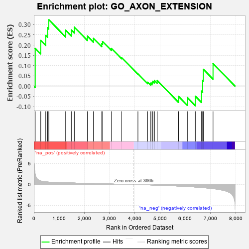
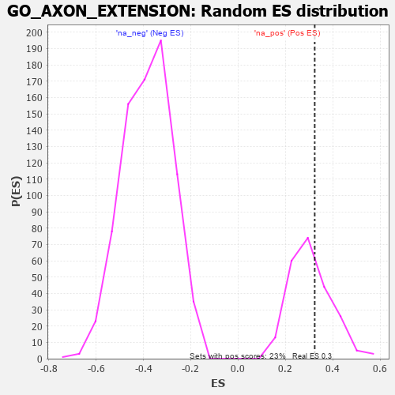

| | | Dataset | 7d |
| Phenotype | NoPhenotypeAvailable |
| Upregulated in class | na_pos |
| GeneSet | GO_AXON_EXTENSION |
| Enrichment Score (ES) | 0.3236543 |
| Normalized Enrichment Score (NES) | 1.0558834 |
| Nominal p-value | 0.36444443 |
| FDR q-value | 0.671359 |
| FWER p-Value | 1.0 |
Table: GSEA Results Summary

Fig 1: Enrichment plot: GO_AXON_EXTENSION
Profile of the Running ES Score & Positions of GeneSet Members on the Rank Ordered List
| PROBE | GENE SYMBOL | GENE_TITLE | RANK IN GENE LIST | RANK METRIC SCORE | RUNNING ES | CORE ENRICHMENT | | 1 | DCLK1 | | | 55 | 2.532 | 0.1843 | Yes |
| 2 | ULK1 | | | 272 | 0.875 | 0.2231 | Yes |
| 3 | LRP1 | | | 470 | 0.648 | 0.2473 | Yes |
| 4 | SRF | | | 542 | 0.615 | 0.2847 | Yes |
| 5 | RAPH1 | | | 592 | 0.597 | 0.3237 | Yes |
| 6 | WDR36 | | | 1260 | 0.437 | 0.2727 | No |
| 7 | IFRD1 | | | 1486 | 0.392 | 0.2740 | No |
| 8 | RNF6 | | | 1605 | 0.373 | 0.2873 | No |
| 9 | ISLR2 | | | 2124 | 0.287 | 0.2438 | No |
| 10 | SIN3A | | | 2361 | 0.251 | 0.2330 | No |
| 11 | DSCAM | | | 2689 | 0.200 | 0.2070 | No |
| 12 | SLIT2 | | | 2724 | 0.195 | 0.2174 | No |
| 13 | MAP2 | | | 3074 | 0.140 | 0.1840 | No |
| 14 | CDK5 | | | 3480 | 0.080 | 0.1391 | No |
| 15 | ABL1 | | | 4125 | -0.027 | 0.0601 | No |
| 16 | ILK | | | 4510 | -0.096 | 0.0190 | No |
| 17 | RAB21 | | | 4620 | -0.122 | 0.0144 | No |
| 18 | LIMK1 | | | 4684 | -0.136 | 0.0168 | No |
| 19 | LHX2 | | | 4716 | -0.143 | 0.0236 | No |
| 20 | RTN4 | | | 4783 | -0.154 | 0.0270 | No |
| 21 | SLIT3 | | | 4890 | -0.175 | 0.0268 | No |
| 22 | SLIT1 | | | 5735 | -0.387 | -0.0502 | No |
| 23 | DBNL | | | 6084 | -0.501 | -0.0562 | No |
| 24 | CDKL3 | | | 6401 | -0.618 | -0.0493 | No |
| 25 | PTPRS | | | 6646 | -0.738 | -0.0243 | No |
| 26 | PAK1 | | | 6691 | -0.757 | 0.0273 | No |
| 27 | GSK3B | | | 6719 | -0.768 | 0.0819 | No |
| 28 | RYK | | | 7102 | -1.000 | 0.1094 | No |
Table: GSEA details [plain text format]

Fig 2: GO_AXON_EXTENSION: Random ES distribution
Gene set null distribution of ES for GO_AXON_EXTENSION